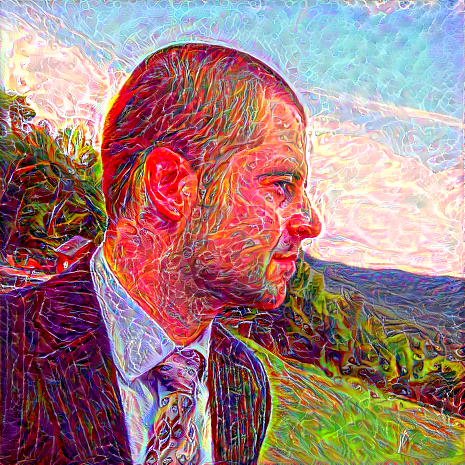

Luke Vilnis
Google Research
lvilnis@gmail.com
GitHub |
LinkedIn |
Google Scholar |
CV
I am a research scientist at
Google. I finished my Ph.D. in 2020 in the
Information Extraction and Synthesis Lab at UMass Amherst, where I was advised by Professor
Andrew McCallum. Previously I was a software engineer and consultant on business intelligence for the financial sector, working on compilers, query engines, financial math and data visualization. I graduated from Duke University in 2010 with a B.S. in Mathematics and Economics. I received my M.S. in Computer Science from the University of Massachusetts Amherst in 2015, passing the Ph.D. candidacy portfolio With Distinction.
I interned with Paul Mineiro and Nikos Karampatziakis in the Microsoft Cloud Information Services Laboratory in the summer of 2014. I interned with Andrew Dai on the Google Brain team in the summer of 2015. I interned with George Dahl on the Google Brain team in the summer of 2016.
I am broadly interested in machine learning, natural language processing, and knowledge base construction, with an emphasis on probabilistic modeling. Areas of interest include representation learning, machine reasoning, structured prediction, and common sense knowledge, as well as applications in the biomedical and sustainable energy domains. I have been the fortunate co-author of multiple publications awarded Best or Outstanding Paper, since two is a multiple of one.
I am also an armchair PLT and functional programming enthusiast, and erstwhile chief maintainer of the factorie machine learning toolkit.
Publications
- Finer Grained Entity Typing with TypeNet. Shikhar Murty, Patrick Verga, Luke Vilnis, Andrew McCallum. Neural Information Processing Systems Workshop on Automated Knowledge Base Construction (AKBC), 2017.
- Generating Sentences from a Continuous Space. Samuel Bowman*, Luke Vilnis*, Oriol Vinyals, Andrew Dai, Rafal Jozefowicz, Samy Bengio. Conference on Computational Natural Language Learning (CoNLL), 2016. * Equal contribution. Oral presentation.
- Optimization and Learning in Factorie.
Alexandre Passos, Luke Vilnis, Andrew
McCallum. Neural Information Processing Systems Workshop on Optimization for Machine Learning (NIPS WS), 2013.
Tutorials/Notes
These are some notes and tutorials I've worked on for class projects and for fun.